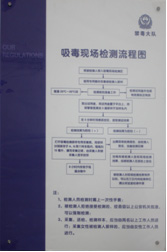

杭州市公安机关吸毒现场检测标准操作程序
一、吸毒现场检测的一般规定
(一)吸毒检测是公安机关运用科学技术手段对涉嫌吸毒的人员进行生物医学检测，为认定吸毒行为提供科学依据的执法行为。
吸毒检测分为现场检测、实验室检测及实验室复检，本操作程序主要对吸毒现场检测进行规范。
(二)吸毒现场检测的对象包括：涉嫌吸毒的人员、被决定执行强制隔离戒毒的人员、被责令接受社区戒毒（康复）的人员以及戒毒康复场所内的戒毒康复人员。
(三)吸毒现场检测一般应在吸毒现场检测室进行，必要时可当场检测（如场所群体性吸毒案件、社区戒毒（康复）人员按规定接受检测、重点人员动态管控出警核实等不便带回检测的）。
(四)吸毒现场检测目前采用毒品胶体金法测试剂（简称：尿检板）对吸毒嫌疑人员的尿样进行检测，以判定嫌疑人员尿样中是否含有毒品成分。常见的尿检板见下表：
|
尿检板英文标识 |
尿检板中文标识 |
主要检测毒品种类 |
|
MOP |
吗啡尿检板 |
海洛因、鸦片、吗啡 |
|
METH |
甲基苯丙胺尿检板 |
冰毒、麻古 |
|
KET |
氯胺酮尿检板 |
K粉 |
|
MDMA |
摇头丸尿检板 |
摇头丸 |
|
MARIJUANA |
大麻尿检板 |
大麻 |
|
MTD |
美沙酮尿检板 |
美沙酮 |
目前,尿检板分为单一品种尿检板（只能检验单一种类毒品的尿检板）、多合一尿检板（可以同时检验多种毒品的尿检板）。
(五)民警不得以有损人格尊严的方式进行检测，并注意保护被检测人的隐私。
(六)吸毒现场检测费用由公安机关承担。
二、吸毒现场检测室的建设要求
(一)市局和各公安分局、县（市）公安局所建的集中办案场所以及派出所、禁毒大队、治安大队办案场所，有条件的应设置吸毒现场检测室，并在门口挂置“吸毒现场检测室”标识牌。没有条件设置现场检测室的，可因地制宜设置吸毒现场检测区。
吸毒现场检测室标识牌
(二)吸毒现场检测室（区）应分设检测工具存放区、尿样采集区和检测工作台，并可根据实际增设尿样保管区和登记开证区。
检测工具存放区 检测工作台 尿样保管区
尿样采集区
登记开证区
(三)检测工具存放区应设置柜子，用于存放吸毒现场检测所需的各类毒品尿样检测板、取尿容器（采样杯）、口罩、手套、样本专用保存瓶、标有A、B字样的封签和现场检测报告等。
检测工具应分类存放，并在抽屉口、柜门等处设置明显标识，方便取用。
(四)尿样采集区应设置厕所蹲位，可以采取在蹲位排污管水面以上设置隔离物，或者在水槽内加入蓝色清洁剂等方式，防止被检测人在尿样采集过程中掺假、稀释或调换。
厕所内设置竖式手铐位
便池内设置隔离物
(五)将吸毒现场检测须知、吸毒现场检测流程图和检测结果判定示意图制作成图板上墙固定。
(六)条件允许的，可将尿样采集和检测各个环节（步骤）的操作方法，采用图片的形式放置在尿样采集区门口等醒目位置，以直观的方式提醒检测民警正确操作。

吸毒现场检测须知 吸毒现场检测流程图
检测结果判定示意图
三、吸毒现场检测的步骤
(一)准备工作
1、采集尿样前，先核对被检测人员的基本身份信息，了解被检测人员吸食毒品的基本情况。
2、准备好取尿容器、尿检板、手套和口罩等检测工具。
取尿容器一般应用纸质或塑料材质，并确保洁净。
(二)尿样采集
1、采集尿样时应由2名以上工作人员进行，采集女性尿样，应当由女性工作人员进行。
2、采集尿样前，应责令被检测人员洗净双手；同时工作人员应戴手套或洗净双手，避免污染检材。
被检测人员在采集尿样前应洗净双手 检测民警戴手套
3、采集过程中，应全程监视，防止被检测人员对尿样掺假、稀释或调换，以及发生其他意外。整个过程应要求被检测人员侧对工作人员，避免背对方式。
被检测人员侧对工作人员 禁止被检测人员背对工作人员
4、采集的尿液量应达到30毫升，不足30毫升的，应妥善保管尿样，待再次采集后，将2次采集的尿液当面混合摇匀。
注意：为达到所需的尿液采集量，工作人员可每隔30分钟提供250毫升的饮用水以促进被采集人排尿，但提供的总水量以750毫升为限。为防止被采集人质疑公安机关在提供的饮用水中掺有可能影响检测结果的物质，所提供的饮用水以未开封的瓶装水为宜。
当面混合摇匀
5、尿样采集完毕后，检测人员应立即检查尿样的颜色以及是否有悬浮物存在。认为尿样有异常的，可以重新采集。
(三)尿样检测
1、尿样检测由2名以上经过吸毒检测培训，具有浙江省公安厅颁发的《吸毒检测认定资格证书》的非本案办案民警操作。
由于检测人员在整个检测过程中无暇控制嫌疑人，为确保安全，检测现场还需有2名以上警力在场看守。
2名以上警力有效控制嫌疑人
2、取出尿检板并平放于检测工作台上，用滴管吸取尿样后注入尿检板加样孔（3-4滴），等待检测结果。
注意：不同被检测人员的尿样不得使用同一根滴管。
加注尿样示意图
3、分别使用吗啡、氯胺酮、摇头丸、甲基苯丙胺、大麻等尿检板对尿样进行检测，以确认被检测人员吸食了何种毒品。
4、检测结果应在5分钟内判定，10分钟后判定无效（可能产生渗透，出现假阳性）。
注意：不同生产厂家的尿检板的判定方法可能不同，操作时须仔细阅读使用说明，严格按照说明书进行判定。以艾康生物技术（杭州）有限公司生产的尿检板为例，尿检板只显示C线为阳性，C线和T线同时显现（不论颜色深浅）为阴性，没有显示或只显示T线则说明检测无效，需重新检测。
艾康公司生产的尿检板呈现阳性反应
3、将尿检板显示结果当场交由被检测人过目，并拍照打印后由被检测人签字确认。
注意：整个检测过程应当置于被检测人的目视下进行。
(四)结论告知
1、开具《吸毒现场检测报告书》，由检测民警签名，并加盖检测的公安机关或其派出机构印章。
注意：派出所办理的案件加盖派出所公章，公安分局、县（市）公安局内设机构办理的案件应加盖所属公安分局、县（市）公安局公章。
2、现场检测结果应当场告知被检测人，交由其在《吸毒现场检测报告书》上签名，并注明是否同意检测结果；被检测人拒绝签名的，由2名以上检测民警在检测报告上注明。
3、被检测人对检测结果有异议的，告知其在3日内向现场检测的公安机关提出实验室检测申请。
(五)尿样保存
1、现场检测结果为阳性的，应将尿样分别保存在2个样本专用保存瓶中，每个瓶中的尿样不得少于15毫升。
2、检查保存瓶完好无损、未渗漏后，使用标有A、B字样的封签当着被检测人的面封存，由检测民警和被检测人在封签上签字确认。
样本专用保存瓶及标有 当着被检测人的面封存尿样
A、B字样的封签
2、尽快将A、B瓶放入冰箱低温保存，保存期限不少于2个月；条件允许的，应使用专用冰箱冷冻保存。
四、强制检测
(一)被检测人拒绝接受检测的，经县级以上公安机关或者其派出机构负责人批准（由负责人在《吸毒现场检测报告书》上签注“同意强制检测”字样，并签名），可以进行强制检测。
(二)需要进行强制检测的，可将被检测人带至具有相关资质条件的县级以上医院，由专业医师通过使用利尿剂迫使其排尿等方式，进行强制检测。
注意：一般不宜使用导尿管的方式采集尿样，因为如果被检测人不配合，极易对其身体造成伤害。
强制检测以约束被检测人能够进行检测为限度，防止对被检测人造成人身伤害。